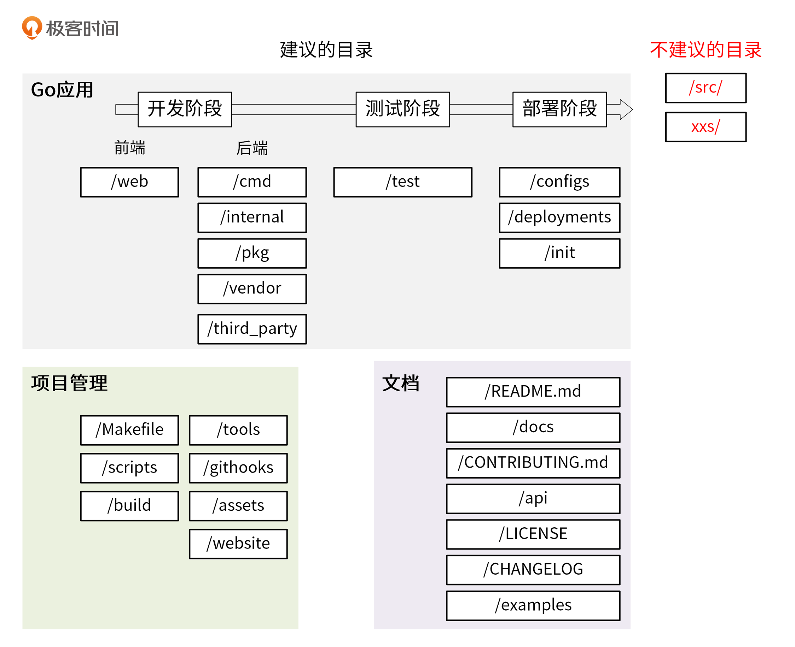

- 00 开篇词 从 0 开始搭建一个企业级 Go 应用.md.html
- 01 IAM系统概述：我们要实现什么样的 Go 项目？.md.html
- 02 环境准备：如何安装和配置一个基本的 Go 开发环境？.md.html
- 03 项目部署：如何快速部署 IAM 系统？.md.html
- 04 规范设计（上）：项目开发杂乱无章，如何规范？.md.html
- 05 规范设计（下）：commit 信息风格迥异、难以阅读，如何规范？.md.html
- 06 目录结构设计：如何组织一个可维护、可扩展的代码目录？.md.html
- 07 工作流设计：如何设计合理的多人开发模式？.md.html
- 08 研发流程设计（上）：如何设计 Go 项目的开发流程？.md.html
- 09 研发流程设计（下）：如何管理应用的生命周期？.md.html
- 10 设计方法：怎么写出优雅的 Go 项目？.md.html
- 11 设计模式：Go常用设计模式概述.md.html
- 12 API 风格（上）：如何设计RESTful API？.md.html
- 13 API 风格（下）：RPC API介绍.md.html
- 14 项目管理：如何编写高质量的Makefile？.md.html
- 15 研发流程实战：IAM项目是如何进行研发流程管理的？.md.html
- 16 代码检查：如何进行静态代码检查？.md.html
- 17 API 文档：如何生成 Swagger API 文档 ？.md.html
- 18 错误处理（上）：如何设计一套科学的错误码？.md.html
- 19 错误处理（下）：如何设计错误包？.md.html
- 20 日志处理（上）：如何设计日志包并记录日志？.md.html
- 21 日志处理（下）：手把手教你从 0 编写一个日志包.md.html
- 22 应用构建三剑客：Pflag、Viper、Cobra 核心功能介绍.md.html
- 23 应用构建实战：如何构建一个优秀的企业应用框架？.md.html
- 24 Web 服务：Web 服务核心功能有哪些，如何实现？.md.html
- 25 认证机制：应用程序如何进行访问认证？.md.html
- 26 IAM项目是如何设计和实现访问认证功能的？.md.html
- 27 权限模型：5大权限模型是如何进行资源授权的？.md.html
- 28 控制流（上）：通过iam-apiserver设计，看Web服务的构建.md.html
- 29 控制流（下）：iam-apiserver服务核心功能实现讲解.md.html
- 30 ORM：CURD 神器 GORM 包介绍及实战.md.html
- 31 数据流：通过iam-authz-server设计，看数据流服务的设计.md.html
- 32 数据处理：如何高效处理应用程序产生的数据？.md.html
- 33 SDK 设计（上）：如何设计出一个优秀的 Go SDK？.md.html
- 34 SDK 设计（下）：IAM项目Go SDK设计和实现.md.html
- 35 效率神器：如何设计和实现一个命令行客户端工具？.md.html
- 36 代码测试（上）：如何编写 Go 语言单元测试和性能测试用例？.md.html
- 37 代码测试（下）：Go 语言其他测试类型及 IAM 测试介绍.md.html
- 38 性能分析（上）：如何分析 Go 语言代码的性能？.md.html
- 39 性能分析（下）：API Server性能测试和调优实战.md.html
- 40 软件部署实战（上）：部署方案及负载均衡、高可用组件介绍.md.html
- 41 软件部署实战（中）：IAM 系统生产环境部署实战.md.html
- 42 软件部署实战（下）：IAM系统安全加固、水平扩缩容实战.md.html
- 43 技术演进（上）：虚拟化技术演进之路.md.html
- 44 技术演进（下）：软件架构和应用生命周期技术演进之路.md.html
- 45 基于Kubernetes的云原生架构设计.md.html
- 46 如何制作Docker镜像？.md.html
- 47 如何编写Kubernetes资源定义文件？.md.html
- 48 IAM 容器化部署实战.md.html
- 49 服务编排（上）：Helm服务编排基础知识.md.html
- 50 服务编排（下）：基于Helm的服务编排部署实战.md.html
- 51 基于 GitHub Actions 的 CI 实战.md.html
- 特别放送 Go Modules依赖包管理全讲.md.html
- 特别放送 Go Modules实战.md.html
- 特别放送 IAM排障指南.md.html
- 特别放送 分布式作业系统设计和实现.md.html
- 特别放送 给你一份Go项目中最常用的Makefile核心语法.md.html
- 特别放送 给你一份清晰、可直接套用的Go编码规范.md.html
- 直播加餐 如何从小白进阶成 Go 语言专家？.md.html
- 结束语 如何让自己的 Go 研发之路走得更远？.md.html
- 捐赠
06 目录结构设计：如何组织一个可维护、可扩展的代码目录？
你好，我是孔令飞。今天我们来聊聊如何设计代码的目录结构。
目录结构是一个项目的门面。很多时候，根据目录结构就能看出开发者对这门语言的掌握程度。所以，在我看来，遵循一个好的目录规范，把代码目录设计得可维护、可扩展，甚至比文档规范、Commit 规范来得更加重要。
那具体怎么组织一个好的代码目录呢？在今天这一讲，我会从 2 个维度来解答这个问题。
首先，我会介绍组织目录的一些基本原则，这些原则可以指导你去组织一个好的代码目录。然后，我会向你介绍一些具体的、优秀的目录结构。你可以通过学习它们，提炼总结出你自己的目录结构设计方法，或者你也可以直接用它们作为你的目录结构规范，也就是说结构即规范。
如何规范目录？
想设计好一个目录结构，我们首先要知道一个好的目录长什么样，也就是目录规范中包含哪些内容。
目录规范，通常是指我们的项目由哪些目录组成，每个目录下存放什么文件、实现什么功能，以及各个目录间的依赖关系是什么等。在我看来，一个好的目录结构至少要满足以下几个要求。
- 命名清晰：目录命名要清晰、简洁，不要太长，也不要太短，目录名要能清晰地表达出该目录实现的功能，并且目录名最好用单数。一方面是因为单数足以说明这个目录的功能，另一方面可以统一规范，避免单复混用的情况。
- 功能明确：一个目录所要实现的功能应该是明确的、并且在整个项目目录中具有很高的辨识度。也就是说，当需要新增一个功能时，我们能够非常清楚地知道把这个功能放在哪个目录下。
- 全面性：目录结构应该尽可能全面地包含研发过程中需要的功能，例如文档、脚本、源码管理、API 实现、工具、第三方包、测试、编译产物等。
- 可观测性：项目规模一定是从小到大的，所以一个好的目录结构应该能够在项目变大时，仍然保持之前的目录结构。
- 可扩展性：每个目录下存放了同类的功能，在项目变大时，这些目录应该可以存放更多同类功能。举个例子，有如下目录结构：
$ ls internal/
app pkg README.md.html
internal 目录用来实现内部代码，app 和 pkg 目录下的所有文件都属于内部代码。如果 internal 目录不管项目大小，永远只有 2 个文件 app 和 pkg，那么就说明 internal 目录是不可扩展的。
相反，如果 internal 目录下直接存放每个组件的源码目录（一个项目可以由一个或多个组件组成），当项目变大、组件增多时，可以将新增加的组件代码存放到 internal 目录，这时 internal 目录就是可扩展的。例如：
$ ls internal/
apiserver authzserver iamctl pkg pump watcher
刚才我讲了目录结构的总体规范，现在来看 2 个具体的、可以作为目录规范的目录结构。
通常，根据功能，我们可以将目录结构分为结构化目录结构和平铺式目录结构两种。结构化目录结构主要用在 Go 应用中，相对来说比较复杂；而平铺式目录结构主要用在 Go 包中，相对来说比较简单。
因为平铺式目录结构比较简单，所以接下来先介绍它。
平铺式目录结构
一个 Go 项目可以是一个应用，也可以是一个代码框架/库，当项目是代码框架/库时，比较适合采用平铺式目录结构。
平铺方式就是在项目的根目录下存放项目的代码，整个目录结构看起来更像是一层的，这种方式在很多框架/库中存在，使用这种方式的好处是引用路径长度明显减少，比如 github.com/marmotedu/log/pkg/options，可缩短为 github.com/marmotedu/log/options。例如 log 包 github.com/golang/glog 就是平铺式的，目录如下：
$ ls glog/
glog_file.go glog.go glog_test.go LICENSE README
接下来，我们来学习结构化目录结构，它比较适合 Go 应用，也比较复杂。
结构化目录结构
当前 Go 社区比较推荐的结构化目录结构是 project-layout 。虽然它并不是官方和社区的规范，但因为组织方式比较合理，被很多 Go 开发人员接受。所以，我们可以把它当作是一个事实上的规范。
首先，我们来看下在开发一个 Go 项目时，通常应该包含的功能。这些功能内容比较多，我放在了 GitHub 的 Go项目通常包含的功能 里，我们设计的目录结构应该能够包含这些功能。
我结合 project-layout，以及上面列出的 Go 项目常见功能，总结出了一套 Go 的代码结构组织方式，也就是 IAM 项目使用的目录结构。这种方式保留了 project-layout 优势的同时，还加入了一些我个人的理解，希望为你提供一个拿来即用的目录结构规范。
接下来，我们一起看看这门课的实战项目所采用的 Go 目录结构。因为实战项目目录比较多，这里只列出了一些重要的目录和文件，你可以快速浏览以加深理解。
├── api
│ ├── openapi
│ └── swagger
├── build
│ ├── ci
│ ├── docker
│ │ ├── iam-apiserver
│ │ ├── iam-authz-server
│ │ └── iam-pump
│ ├── package
├── CHANGELOG
├── cmd
│ ├── iam-apiserver
│ │ └── apiserver.go
│ ├── iam-authz-server
│ │ └── authzserver.go
│ ├── iamctl
│ │ └── iamctl.go
│ └── iam-pump
│ └── pump.go
├── configs
├── CONTRIBUTING.md.html
├── deployments
├── docs
│ ├── devel
│ │ ├── en-US
│ │ └── zh-CN
│ ├── guide
│ │ ├── en-US
│ │ └── zh-CN
│ ├── images
│ └── README.md.html
├── examples
├── githooks
├── go.mod
├── go.sum
├── init
├── internal
│ ├── apiserver
│ │ ├── api
│ │ │ └── v1
│ │ │ └── user
│ │ ├── apiserver.go
│ │ ├── options
│ │ ├── service
│ │ ├── store
│ │ │ ├── mysql
│ │ │ ├── fake
│ │ └── testing
│ ├── authzserver
│ │ ├── api
│ │ │ └── v1
│ │ │ └── authorize
│ │ ├── options
│ │ ├── store
│ │ └── testing
│ ├── iamctl
│ │ ├── cmd
│ │ │ ├── completion
│ │ │ ├── user
│ │ └── util
│ ├── pkg
│ │ ├── code
│ │ ├── options
│ │ ├── server
│ │ ├── util
│ │ └── validation
├── LICENSE
├── Makefile
├── _output
│ ├── platforms
│ │ └── linux
│ │ └── amd64
├── pkg
│ ├── util
│ │ └── genutil
├── README.md.html
├── scripts
│ ├── lib
│ ├── make-rules
├── test
│ ├── testdata
├── third_party
│ └── forked
└── tools
看到这一长串目录是不是有些晕？没关系，这里我们一起给这个大目录分下类，然后再具体看看每一类目录的作用，你就清楚了。
在我看来，一个 Go 项目包含 3 大部分：Go 应用 、项目管理和文档。所以，我们的项目目录也可以分为这 3 大类。同时，Go 应用又贯穿开发阶段、测试阶段和部署阶段，相应的应用类的目录，又可以按开发流程分为更小的子类。当然了，这些是我建议的目录，Go 项目目录中还有一些不建议的目录。所以整体来看，我们的目录结构可以按下图所示的方式来分类：

接下来你就先专心跟着我走一遍每个目录、每个文件的作用，等你下次组织代码目录的时候，可以再回过头来看看，那时你一定会理解得更深刻。
Go 应用 ：主要存放前后端代码
首先，我们来说说开发阶段所涉及到的目录。我们开发的代码包含前端代码和后端代码，可以分别存放在前端目录和后端目录中。
- /web
前端代码存放目录，主要用来存放Web静态资源，服务端模板和单页应用（SPAs）。
- /cmd
一个项目有很多组件，可以把组件 main 函数所在的文件夹统一放在/cmd 目录下，例如：
$ ls cmd/
gendocs geniamdocs genman genswaggertypedocs genyaml iam-apiserver iam-authz-server iamctl iam-pump
$ ls cmd/iam-apiserver/
apiserver.go
每个组件的目录名应该跟你期望的可执行文件名是一致的。这里要保证 /cmd/<组件名> 目录下不要存放太多的代码，如果你认为代码可以导入并在其他项目中使用，那么它应该位于 /pkg 目录中。如果代码不是可重用的，或者你不希望其他人重用它，请将该代码放到 /internal 目录中。
- /internal
存放私有应用和库代码。如果一些代码，你不希望在其他应用和库中被导入，可以将这部分代码放在/internal 目录下。
在引入其它项目 internal 下的包时，Go 语言会在编译时报错：
An import of a path containing the element “internal” is disallowed
if the importing code is outside the tree rooted at the parent of the
"internal" directory.
可以通过 Go 语言本身的机制来约束其他项目 import 项目内部的包。/internal 目录建议包含如下目录：
- /internal/apiserver：该目录中存放真实的应用代码。这些应用的共享代码存放在
/internal/pkg目录下。 - /internal/pkg：存放项目内可共享，项目外不共享的包。这些包提供了比较基础、通用的功能，例如工具、错误码、用户验证等功能。
我的建议是，一开始将所有的共享代码存放在/internal/pkg 目录下，当该共享代码做好了对外开发的准备后，再转存到/pkg目录下。
下面，我详细介绍下 IAM 项目的 internal目录 ，来加深你对 internal 的理解，目录结构如下：
├── apiserver
│ ├── api
│ │ └── v1
│ │ └── user
│ ├── options
│ ├── config
│ ├── service
│ │ └── user.go
│ ├── store
│ │ ├── mysql
│ │ │ └── user.go
│ │ ├── fake
│ └── testing
├── authzserver
│ ├── api
│ │ └── v1
│ ├── options
│ ├── store
│ └── testing
├── iamctl
│ ├── cmd
│ │ ├── cmd.go
│ │ ├── info
└── pkg
├── code
├── middleware
├── options
└── validation
/internal 目录大概分为 3 类子目录：
- /internal/pkg：内部共享包存放的目录。
- /internal/authzserver、/internal/apiserver、/internal/pump、/internal/iamctl：应用目录，里面包含应用程序的实现代码。
- /internal/iamctl：对于一些大型项目，可能还会需要一个客户端工具。
在每个应用程序内部，也会有一些目录结构，这些目录结构主要根据功能来划分：
- /internal/apiserver/api/v1：HTTP API 接口的具体实现，主要用来做 HTTP 请求的解包、参数校验、业务逻辑处理、返回。注意这里的业务逻辑处理应该是轻量级的，如果业务逻辑比较复杂，代码量比较多，建议放到 /internal/apiserver/service 目录下。该源码文件主要用来串流程。
- /internal/apiserver/options：应用的 command flag。
- /internal/apiserver/config：根据命令行参数创建应用配置。
- /internal/apiserver/service：存放应用复杂业务处理代码。
- /internal/apiserver/store/mysql：一个应用可能要持久化的存储一些数据，这里主要存放跟数据库交互的代码，比如 Create、Update、Delete、Get、List 等。
/internal/pkg 目录存放项目内可共享的包，通常可以包含如下目录：
- /internal/pkg/code：项目业务 Code 码。
- /internal/pkg/validation：一些通用的验证函数。
- /internal/pkg/middleware：HTTP 处理链。
- /pkg
/pkg 目录是 Go 语言项目中非常常见的目录，我们几乎能够在所有知名的开源项目（非框架）中找到它的身影，例如 Kubernetes、Prometheus、Moby、Knative 等。
该目录中存放可以被外部应用使用的代码库，其他项目可以直接通过 import 导入这里的代码。所以，我们在将代码库放入该目录时一定要慎重。
- /vendor
项目依赖，可通过 go mod vendor 创建。需要注意的是，如果是一个 Go 库，不要提交 vendor 依赖包。
- /third_party
外部帮助工具，分支代码或其他第三方应用（例如Swagger UI）。比如我们 fork 了一个第三方 go 包，并做了一些小的改动，我们可以放在目录/third_party/forked 下。一方面可以很清楚的知道该包是 fork 第三方的，另一方面又能够方便地和 upstream 同步。
Go 应用：主要存放测试相关的文件和代码
接着，我们再来看下测试阶段相关的目录，它可以存放测试相关的文件。
- /test
用于存放其他外部测试应用和测试数据。/test 目录的构建方式比较灵活：对于大的项目，有一个数据子目录是有意义的。例如，如果需要 Go 忽略该目录中的内容，可以使用/test/data 或/test/testdata 目录。
需要注意的是，Go 也会忽略以“.”或 “_” 开头的目录或文件。这样在命名测试数据目录方面，可以具有更大的灵活性。
Go 应用：存放跟应用部署相关的文件
接着，我们再来看下与部署阶段相关的目录，这些目录可以存放部署相关的文件。
- /configs
这个目录用来配置文件模板或默认配置。例如，可以在这里存放 confd 或 consul-template 模板文件。这里有一点要注意，配置中不能携带敏感信息，这些敏感信息，我们可以用占位符来替代，例如：
apiVersion: v1
user:
username: ${CONFIG_USER_USERNAME} # iam 用户名
password: ${CONFIG_USER_PASSWORD} # iam 密码
- /deployments
用来存放 Iaas、PaaS 系统和容器编排部署配置和模板（Docker-Compose，Kubernetes/Helm，Mesos，Terraform，Bosh）。在一些项目，特别是用 Kubernetes 部署的项目中，这个目录可能命名为 deploy。
为什么要将这类跟 Kubernetes 相关的目录放到目录结构中呢？主要是因为当前软件部署基本都在朝着容器化的部署方式去演进。
- /init
存放初始化系统（systemd，upstart，sysv）和进程管理配置文件（runit，supervisord）。比如 sysemd 的 unit 文件。这类文件，在非容器化部署的项目中会用到。
项目管理：存放用来管理 Go 项目的各类文件
在做项目开发时，还有些目录用来存放项目管理相关的文件，这里我们一起来看下。
- /Makefile
虽然 Makefile 是一个很老的项目管理工具，但它仍然是最优秀的项目管理工具。所以，一个 Go 项目在其根目录下应该有一个 Makefile 工具，用来对项目进行管理，Makefile 通常用来执行静态代码检查、单元测试、编译等功能。其他常见功能，你可以参考这里： Makefile常见管理内容 。
我还有一条建议：直接执行 make 时，执行如下各项 format -> lint -> test -> build，如果是有代码生成的操作，还可能需要首先生成代码 gen -> format -> lint -> test -> build。
在实际开发中，我们可以将一些重复性的工作自动化，并添加到 Makefile 文件中统一管理。
- /scripts
该目录主要用来存放脚本文件，实现构建、安装、分析等不同功能。不同项目，里面可能存放不同的文件，但通常可以考虑包含以下 3 个目录：
- /scripts/make-rules：用来存放 makefile 文件，实现/Makefile 文件中的各个功能。Makefile 有很多功能，为了保持它的简洁，我建议你将各个功能的具体实现放在
/scripts/make-rules文件夹下。 - /scripts/lib：shell 库，用来存放 shell 脚本。一个大型项目中有很多自动化任务，比如发布、更新文档、生成代码等，所以要写很多 shell 脚本，这些 shell 脚本会有一些通用功能，可以抽象成库，存放在
/scripts/lib目录下，比如 logging.sh，util.sh 等。 - /scripts/install：如果项目支持自动化部署，可以将自动化部署脚本放在此目录下。如果部署脚本简单，也可以直接放在/scripts 目录下。
另外，shell 脚本中的函数名，建议采用语义化的命名方式，例如 iam::log::info 这种语义化的命名方式，可以使调用者轻松的辨别出函数的功能类别，便于函数的管理和引用。在Kubernetes 的脚本中，就大量采用了这种命名方式。
- /build
这里存放安装包和持续集成相关的文件。这个目录下有 3 个大概率会使用到的目录，在设计目录结构时可以考虑进去。
- /build/package：存放容器（Docker）、系统（deb, rpm, pkg）的包配置和脚本。
- /build/ci：存放 CI（travis，circle，drone）的配置文件和脚本。
- /build/docker：存放子项目各个组件的 Dockerfile 文件。
- /tools
存放这个项目的支持工具。这些工具可导入来自/pkg 和/internal 目录的代码。
- /githooks
Git 钩子。比如，我们可以将 commit-msg 存放在该目录。
- /assets
项目使用的其他资源(图片、CSS、JavaScript 等)。
- /website
如果你不使用 GitHub 页面，那么可以在这里放置项目网站相关的数据。
文档：主要存放项目的各类文档
一个项目，也包含一些文档，这些文档有很多类别，也需要一些目录来存放这些文档，这里我们也一起来看下。
- /README.md.html
项目的 README 文件一般包含了项目的介绍、功能、快速安装和使用指引、详细的文档链接以及开发指引等。有时候 README 文档会比较长，为了能够快速定位到所需内容，需要添加 markdown toc 索引，可以借助工具 tocenize 来完成索引的添加。
这里还有个建议，前面我们也介绍过 README 是可以规范化的，所以这个 README 文档，可以通过脚本或工具来自动生成。
- /docs
存放设计文档、开发文档和用户文档等（除了 godoc 生成的文档）。推荐存放以下几个子目录：
- /docs/devel/{en-US,zh-CN}：存放开发文档、hack 文档等。
- /docs/guide/{en-US,zh-CN}: 存放用户手册，安装、quickstart、产品文档等，分为中文文档和英文文档。
- /docs/images：存放图片文件。
- /CONTRIBUTING.md.html
如果是一个开源就绪的项目，最好还要有一个 CONTRIBUTING.md.html 文件，用来说明如何贡献代码，如何开源协同等等。CONTRIBUTING.md.html 不仅能够规范协同流程，还能降低第三方开发者贡献代码的难度。
- /api
/api 目录中存放的是当前项目对外提供的各种不同类型的 API 接口定义文件，其中可能包含类似 /api/protobuf-spec、/api/thrift-spec、/api/http-spec、openapi、swagger 的目录，这些目录包含了当前项目对外提供和依赖的所有 API 文件。例如，如下是 IAM 项目的/api 目录：
├── openapi/
│ └── README.md.html
└── swagger/
├── docs/
├── README.md.html
└── swagger.yaml
二级目录的主要作用，就是在一个项目同时提供了多种不同的访问方式时，可以分类存放。用这种方式可以避免潜在的冲突，也能让项目结构更加清晰。
- /LICENSE
版权文件可以是私有的，也可以是开源的。常用的开源协议有：Apache 2.0、MIT、BSD、GPL、Mozilla、LGPL。有时候，公有云产品为了打造品牌影响力，会对外发布一个本产品的开源版本，所以在项目规划初期最好就能规划下未来产品的走向，选择合适的 LICENSE。
为了声明版权，你可能会需要将 LICENSE 头添加到源码文件或者其他文件中，这部分工作可以通过工具实现自动化，推荐工具： addlicense 。
当代码中引用了其它开源代码时，需要在 LICENSE 中说明对其它源码的引用，这就需要知道代码引用了哪些源码，以及这些源码的开源协议，可以借助工具来进行检查，推荐工具： glice 。至于如何说明对其它源码的引用，大家可以参考下 IAM 项目的 LICENSE 文件。
- /CHANGELOG
当项目有更新时，为了方便了解当前版本的更新内容或者历史更新内容，需要将更新记录存放到 CHANGELOG 目录。编写 CHANGELOG 是一个复杂、繁琐的工作，我们可以结合 Angular规范 和 git-chglog 来自动生成 CHANGELOG。
- /examples
存放应用程序或者公共包的示例代码。这些示例代码可以降低使用者的上手门槛。
不建议的目录
除了上面这些我们建议的目录，在 Go 项目中，还有一些目录是不建议包含的，这些目录不符合 Go 的设计哲学。
- /src/
一些开发语言，例如 Java 项目中会有 src 目录。在 Java 项目中， src 目录是一种常见的模式，但在 Go 项目中，不建议使用 src 目录。
其中一个重要的原因是：在默认情况下，Go 语言的项目都会被放置到$GOPATH/src 目录下。这个目录中存放着所有代码，如果我们在自己的项目中使用/src 目录，这个包的导入路径中就会出现两个 src，例如：
$GOPATH/src/github.com/marmotedu/project/src/main.go
这样的目录结构看起来非常怪。
- xxs/
在 Go 项目中，要避免使用带复数的目录或者包。建议统一使用单数。
一些建议
上面介绍的目录结构包含很多目录，但一个小型项目用不到这么多目录。对于小型项目，可以考虑先包含 cmd、pkg、internal 3 个目录，其他目录后面按需创建，例如：
$ tree --noreport -L 2 tms
tms
├── cmd
├── internal
├── pkg
└── README.md.html
另外，在设计目录结构时，一些空目录无法提交到 Git 仓库中，但我们又想将这个空目录上传到 Git 仓库中，以保留目录结构。这时候，可以在空目录下加一个 .keep 文件，例如：
$ ls -A build/ci/
.keep
总结
今天我们主要学习了怎么设计代码的目录结构。先讲了目录结构的设计思路：在设计目录结构时，要确保目录名是清晰的，功能是明确的，并且设计的目录结构是可扩展的。
然后，我们一起学习了 2 种具体的目录结构：结构化目录结构和平铺式目录结构。结构化目录结构比较适合 Go 应用，平铺式目录结构比较适合框架/库。因为这2种目录结构组织比较合理，可以把它们作为目录规范来使用。
你还可以结合实战项目的例子，来加深对这两种目录结构的理解。对于结构化目录结构，你可以参考这门课 IAM 实战项目的目录结构；对于平铺式的目录结构，你可以参考这门课实战部分设计的 log 包。
课后练习
- 试着用本节课描述的目录规范，重构下你当前的项目，并看下有啥优缺点。
- 思考下你工作中遇到过哪些比较好的目录结构，它们有什么优点和可以改进的地方。
欢迎你在留言区与我交流讨论，我们下一讲见。
© 2019 - 2023 Liangliang Lee. Powered by gin and hexo-theme-book.